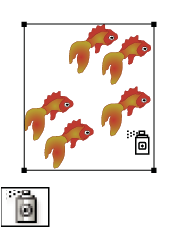
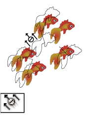
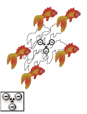
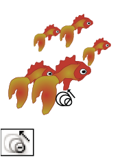
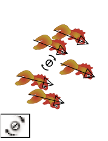
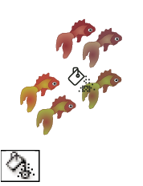
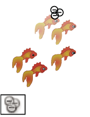
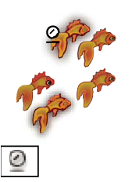

Symbolism tool gallery
The symbolism tools let you create and modify sets of symbol instances. You create a symbol set using the Symbol Sprayer tool. You can then use the other symbolism tools to change the density, color, location, size, rotation, transparency, and style of the instances in the set.
|
 The Symbol Sprayer tool (Shift+S) places multiple symbol instances
as a set on the artboard. |
 The Symbol Shifter tool moves symbol instances |
 The Symbol Scruncher tool moves symbol instances closer together or
farther apart. |
 The Symbol Sizer tool resizes symbol instances. |
|
 The Symbol Spinner tool rotates symbol instances. |
 The Symbol Stainer tool colorizes symbol instances. |
 The Symbol Screener tool applies opacity to symbol instances. |
 The Symbol Styler tool applies the selected style to symbol
instances. |